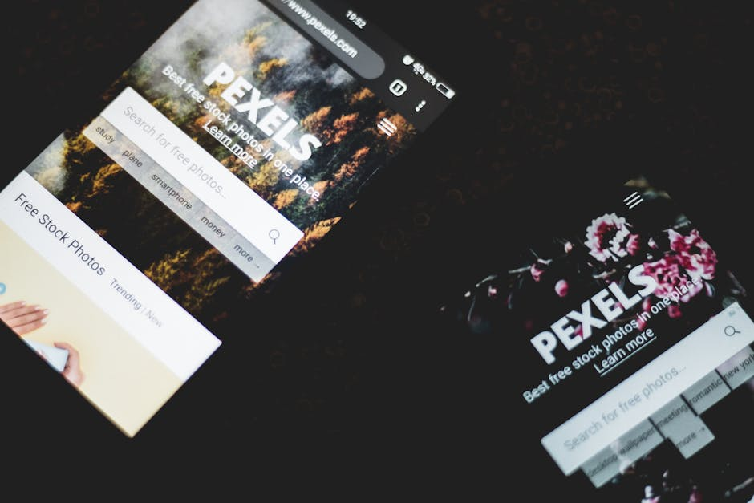

Stellen Sie sich vor: Jemand sucht bei Google nach genau dem, was Sie anbieten, klickt auf Ihre Website – und ist nach drei Sekunden wieder weg. Keine Anfrage, kein Kauf, kein Kontakt. Dieses Szenario spielt sich auf tausenden Unternehmens-Websites täglich ab. Die sogenannte Absprungrate (engl. Bounce Rate) misst, wie viele Besucher eine Website nach dem Aufruf der ersten Seite sofort wieder verlassen, ohne mit ihr zu interagieren.
Eine hohe Absprungrate hat direkte wirtschaftliche Folgen: Jeder abgesprungene Besucher ist ein verlorener potenzieller Kunde. Bei bezahlter Werbung bedeutet das: Sie zahlen für Klicks, die nichts einbringen. Bei organischem Traffic sendet eine hohe Absprungrate außerdem negative Signale an Google, was Ihre Rankings langfristig verschlechtert.
Durchschnittliche Absprungraten nach Branche: E-Commerce 20–45 %, Dienstleistungsseiten 10–30 %, Blogs und Inhaltsseiten 65–90 %, Landing Pages 60–90 %. Liegt Ihre Rate deutlich darüber, ist Handlungsbedarf gegeben.
Wir haben die 16 häufigsten Gründe zusammengestellt, warum Besucher Websites vorzeitig verlassen – und was Sie konkret dagegen tun können.
Gründe 1–4: Technische Probleme
Technische Mängel sind die gravierendsten Absprungursachen, weil sie dem Besucher gar keine Chance lassen, Ihre Inhalte wahrzunehmen.
Google hat nachgewiesen: Wenn eine Seite länger als 3 Sekunden braucht, verlassen 53 % der mobilen Nutzer sie. Bei 5 Sekunden sind es schon 90 %. Ursachen sind oft unkomprimierte Bilder, zu viele JavaScript-Dateien, fehlende Browser-Caching-Regeln oder ein langsamer Hosting-Server. Die Ladezeit ist einer der direkt messbaren Faktoren, die Sie technisch kontrollieren können – und muß.
Lösung: Bilder in WebP-Format konvertieren und komprimieren, JavaScript und CSS minimieren (minifyen), Browser-Caching aktivieren, einen schnellen Hosting-Anbieter wählen und bei Bedarf ein Content Delivery Network (CDN) nutzen. Messen Sie Ihre Ladezeit regelmäßig mit Google PageSpeed Insights.
Mehr als 60 % des weltweiten Website-Traffics kommt von mobilen Geräten. Wer eine Website besucht, die auf dem Smartphone unleserlich ist, zu weit zoomen muss oder deren Buttons zu klein zum Antippen sind, verliert das Interesse sofort. Google indexiert Websites nach dem Mobile-First-Prinzip – eine schlechte mobile Darstellung schadet also auch Ihrem Suchmaschinenranking.
Lösung: Responsives Webdesign mit CSS-Flexbox oder -Grid implementieren. Buttons mindestens 44 × 44 Pixel groß gestalten. Text-Grundgröße auf Mobilgeräten mindestens 16px. Testen Sie Ihre Website regelmäßig im Chrome Developer Tool mit verschiedenen Geräte-Emulationen und auf echten Smartphones.

404-Fehlermeldungen, JavaScript-Konsolenfehler, die das Layout zerstören, oder Seiten, die in älteren Browsern gar nicht funktionieren: Technische Fehler signalisieren Unprofessionalität und erzëugen bei Besuchern sofortiges Misstrauen. Auch Plugin-Konflikte bei CMS-basierten Websites (WordPress, TYPO3) können plötzlich optische oder funktionale Fehler verursachen.
Lösung: Nutzen Sie Google Search Console zur Überwachung von Crawl-Fehlern. Prüfen Sie Ihre Website regelmäßig in verschiedenen Browsern (Chrome, Firefox, Safari, Edge). Richten Sie aussagekräftige 404-Seiten ein, die den Besucher zur Startseite oder zu einer Suche weiterleiten.
Websites ohne SSL-Zertifikat zeigen Browsern wie Chrome einen roten Warnhinweis "Nicht sicher" in der Adressleiste. Studien belegen, dass Nutzer bei diesem Hinweis die Seite sofort verlassen – besonders bei Seiten, auf denen sie Formulare ausfüllen sollen. Darüber hinaus bevorzugt Google HTTPS-Websites beim Ranking.
Lösung: Installieren Sie ein gültiges SSL-Zertifikat (kostenlos über Let's Encrypt). Richten Sie eine 301-Weiterleitung von HTTP auf HTTPS ein. Stellen Sie sicher, dass alle internen Links und Ressourcen über HTTPS geladen werden (kein "Mixed Content").
Gründe 5–8: Design & Navigation
Auch technisch einwandfreie Websites verlieren Besucher, wenn Design und Navigation keine gute Nutzererfahrung bieten.
Nutzer beurteilen die Glaubwürdigkeit einer Website innerhalb von 50 Millisekunden. Eine Website, die optisch in den 2000ern feststeckt, wird unbewusst mit Vertrauensverlust assoziiert – selbst wenn das Unternehmen dahinter top-kompetent ist. Veraltetes Design vermittelt: "Dieses Unternehmen hat sich seit Jahren nicht weiterentwickelt." Das ist kein gutes Signal für potenzielle Kunden.
Lösung: Investieren Sie alle 3–5 Jahre in ein professionelles Webdesign-Update. Aktuelle Designtrends wie klare Weißraumnutzung, starke Typografie und hochwertige Bildsprache vermitteln Modernität und Kompetenz. Ein gutes Design muss dabei zeitlos sein – nicht nur modisch.
Wenn Besucher nicht innerhalb von Sekunden finden, was sie suchen, verlassen sie die Seite. Häufige Navigationsfehler: zu viele Menüpunkte auf oberster Ebene (mehr als 7 ist ein Warnsignal), generische Menübezeichnungen wie "Leistungen" oder "Produkte" ohne Unterpunkte, keine erkennbare Hierachie, fehlende Breadcrumbs auf tiefer geschachtelten Seiten.
Lösung: Beschränken Sie die Hauptnavigation auf 5–7 Punkte. Nutzen Sie sprechende Bezeichnungen, die die Nutzererwartungen erfüllen. Platzieren Sie wichtige Inhalte (z. B. Kontakt, Preise, Portfolio) prominent und leicht erreichbar. Testen Sie Ihre Navigation mit echten Nutzern (auch mit Ihrer Mutter oder einem Freund ohne IT-Kenntisse).
Text, der schwer zu lesen ist, wird nicht gelesen – und damit wird auch Ihr Angebot nicht wahrgenommen. Typische Lesbarkeitsfehlern: zu kleiner Text (unter 14px), zu geringer Kontrast zwischen Text- und Hintergrundfarbe, zu schmale Zeilenabstände (unter 1.5), zu breite Textblocks ohne Zeilenumbruch (idealerweise 60–75 Zeichen pro Zeile), serifenlose Schriften mit schlechter Webdarstellung.
Lösung: Textgröße mindestens 16px auf Desktop. Zeilenabstand 1.6–1.8. Kontrast mindestens 4,5:1 (WCAG AA-Standard, prüfbar mit dem WebAIM Contrast Checker). Maximale Spaltenbreite von 700–800px für Fließtext. Google Fonts wie Inter, Source Sans Pro oder Lato bieten hervorragende Web-Lesbarkeit.
Wand-an-Wand-Text ohne visuelle Gliederung schreckt Leser ab. Das gilt besonders auf Mobilgeräten, wo ein langer Textblock nicht durch den weißen Rand eines Buches aufgelockert wird. Nutzer scannen Webseiten – sie lesen sie nicht wie ein Buch. Wenn es keine klaren Überschriften, Absätze, Listen oder Hervorhebungen gibt, werden sie schnell aufgeben.
Lösung: Strukturieren Sie Inhalte mit H2- und H3-Überschriften. Nutzen Sie Aufzählungslisten für Auflistungen. Brechen Sie lange Textblöcke mit Bildern, Zitaten oder Infoboxen auf. Nutzen Sie ausreichend Weißraum (Padding und Margin) zwischen Abschnitten.
Gründe 9–12: Inhalt & Vertrauen
Selbst technisch und optisch perfekte Websites können hohe Absprungraten haben, wenn Inhalt und Vertrauenssignale fehlen.
Die häufigste Frage, die Besucher einer Website unbewusst stellen: "Bin ich hier richtig? Was bekomme ich hier?" Wenn die Antwort nicht innerhalb von 5 Sekunden klar ist, wird abgesprungen. Viele Unternehmenswebsites sind zu stark auf das Unternehmen selbst fokussiert ("Wir sind seit 1985...") statt auf den Nutzen für den Besucher ("Wir lösen Ihr Problem X in Y Schritten").
Lösung: Formulieren Sie eine klare Hero-Aussage, die in einem Satz erklärt, was Sie anbieten, für wen und warum das besser ist als bei der Konkurrenz. Platzieren Sie diese prominent im sichtbaren Bereich ohne Scrollen (above the fold). Sprechen Sie immer zuerst den Nutzen für den Kunden an – dann über sich.
Menschen treffen Kaufentscheidungen stark beeinflusst durch andere Menschen. Websites ohne Kundenbewertungen, Referenzen, Logos bekannter Kunden oder Erfahrungsberichte wirken anonym und unbewiesen. Selbst hervorragende Leistungen können nicht überzeugen, wenn niemand anderes davon berichtet. Das gilt besonders für Dienstleistungsunternehmen, bei denen der Kunde die Qualität nicht vor dem Kauf prüfen kann.
Lösung: Sammeln Sie aktiv Google-Bewertungen (bitten Sie zufriedene Kunden direkt darum). Zeigen Sie auf der Website 3–5 ausführliche Kundenzitate mit Namen und Foto. Präsentieren Sie Referenzprojekte mit konkreten Ergebnissen. Erwähnen Sie Auszeichnungen, Zertifizierungen oder Partnerschaften.
Wenn Besucher nicht auf Anhieb erkennen können, wer hinter einer Website steckt und wie sie Kontakt aufnehmen können, entstehen Zweifel an der Seriosität. Fehlende oder versteckte Kontaktdaten wirken wie ein anonymes Ladenschaufenster ohne Schild. Das löst besonders bei älteren Zielgruppen und bei B2B-Kunden sofortige Skepsis aus.
Lösung: Platzieren Sie Telefonnummer und E-Mail-Adresse gut sichtbar im Header oder in der Navigation. Ergänzen Sie eine Kontaktseite mit vollständiger Adresse, Öffnungszeiten und – wenn vorhanden – einem Foto des Teams. Ein vollständiges und leicht auffindbares Impressum ist in Deutschland zudem rechtlich Pflicht.
Das lächelnde Geschäftsteam aus dem amerikanischen Stock-Foto-Portal – jeder kennt es, niemand glaubt es. Generische Stock-Fotos verpassen die Chance, Persönlichkeit zu zeigen und Vertrauen aufzubauen. Schlimmer noch: Sie können dasselbe Foto auf einer Konkurrenz-Website sehen, was sofort den Eindruck von Austauschbarkeit erzeugt.
Lösung: Investieren Sie in professionelle Fotos Ihres Teams, Ihrer Räumlichkeiten und Ihrer Arbeit. Echte Menschen und echte Situationen erzeugen Verbindung. Falls ein professionelles Fotoshooting nicht im Budget ist, sind hochwertige, authentisch wirkende Fotos von Plattformen wie Unsplash deutlich besser als das abgenutzte Handshake-Foto aus einer kostenpflichtigen Datenbank.
Gründe 13–16: Conversion & UX
Selbst wenn ein Besucher von Ihrem Angebot überzeugt ist: Schlechte UX und fehlende Conversion-Elemente verhindern, dass er zur Anfrage oder zum Kauf schreitet.
Was soll der Besucher als nächstes tun? Wenn Ihre Website diese Frage nicht eindeutig beantwortet, wird er gar nichts tun. Viele Websites haben zu viele gleichwertige CTAs (sodass der Besucher nicht weiß, wohin er zuerst klicken soll), zu schwache CTAs ("Mehr erfahren" statt "Kostenloses Angebot erhalten") oder CTAs, die im Design nicht prominent genug hervorstechen.
Lösung: Definieren Sie für jede Seite eine primäre Handlungsaufforderung. Platzieren Sie sie prominent im sichtbaren Bereich und wiederholen Sie sie am Seitenende. Verwenden Sie aktive, nutzenorientierte Formulierungen: "Jetzt Angebot anfordern", "Kostenlose Erstberatung buchen", "Projekt anfragen". Gestalten Sie CTAs visuell auffallend – Kontrast ist dabei wichtiger als Schriftgröße.
Ein Newsletter-Pop-up, das 0,5 Sekunden nach dem Seitenaufruf erscheint, wirkt aufdringlich und bricht den Lesefluss. Besucher, die noch nicht einmal wissen, was Ihre Website anbietet, werden nicht ihren Namen und ihre E-Mail-Adresse hergeben. Ähnliches gilt für Chat-Widgets, die sofort aufploppen, Cookie-Banner, die halben Screen einnehmen, und Push-Notification-Anfragen direkt beim ersten Besuch.
Lösung: Zeigen Sie Newsletter-Pop-ups frühestens nach 60 Sekunden oder beim Verlassen der Seite (Exit-Intent). Nutzen Sie Inline-Formen für E-Mail-Opt-ins statt Pop-ups. Begrenzen Sie parallele Unterbrechungen auf maximal eine. Stellen Sie den Mehrwert klar: "Erhalte wertvolle Tipps zu..." ist besser als ein blankes Eingabefeld.
Besonders im B2C-Bereich, aber auch im B2B zunehmend: Nutzer wollen wissen, was etwas kostet, bevor sie Zeit in eine Anfrage investieren. Websites, die keinerlei Preisinformation geben und auf "Kontakt aufnehmen für ein individuelles Angebot" setzen, verlieren potenzielle Kunden, die nicht bereit sind, diesen Schritt zu gehen, ohne eine ungefähre Größenordnung zu kennen.
Lösung: Geben Sie zumindest Preisspannen oder Einstiegspreise an (z. B. "ab 990 €"). Erklären Sie, was in einem Standardpaket enthalten ist. Falls Individualpreise unvermeidbar sind, erklären Sie den Prozess: "In einem kostenlosen 30-Min.-Gespräch erstellen wir ein individuelles Angebot." So senken Sie die Hemmschwelle zur Kontaktaufnahme deutlich.
Der finale und oft unterschätzte Absprunggrund: Der Besucher versteht nicht, warum er ausgerechnet bei Ihnen kaufen soll. Wenn Ihre Website kein klares Alleinstellungsmerkmal (USP) kommuniziert und sich nicht von Wettbewerbern unterscheidet, wird der Nutzer die nächste Website in den Google-Ergebnissen aufrufen. Generische Aussagen wie "Qualität, Kompetenz und Service" differenzieren gar nicht.
Lösung: Definieren Sie Ihren USP klar: Was können Sie besser, schneller, günstiger oder anders als Ihre Mitbewerber? Kommunizieren Sie das prominent und frühzeitig auf der Seite. Persönlichkeit, lokale Verwurzelung, spezialisiertes Know-how oder besondere Garantien sind echte Differenzierungsmerkmale – nutzen Sie sie.
Fazit und Handlungsempfehlung
Eine hohe Absprungrate ist kein Schicksal – sie ist ein Symptom, das auf behebbare Ursachen hinweist. Die gute Nachricht: Die meisten der 16 beschriebenen Probleme lassen sich mit gezielten Maßnahmen lösen, ohne dass eine vollständige Website-Neu-Entwicklung nötig wäre.
Unser Empfehlung: Beginnen Sie mit den technischen Grundlagen (HTTPS, Ladezeit, Mobildarstellung) – diese haben den größten unmittelbaren Einfluss. Analysieren Sie dann mit Google Analytics oder einem ähnlichen Tool, auf welchen Seiten die Absprungrate besonders hoch ist, und priorisieren Sie diese für inhaltliche und gestalterische Verbesserungen.
Möchten Sie wissen, warum Besucher Ihre konkrete Website verlassen? Wir führen gerne einen professionellen Website-Check durch – sprechen Sie uns an.
Absprungrate verstehen: Kontext ist alles
Eine hohe Absprungrate ist nicht automatisch ein Problem – sie muss im Kontext bewertet werden. Auf einer Kontaktseite, auf der Besucher eine Telefonnummer suchen und dann anrufen, ist eine hohe Absprungrate ein Zeichen für Erfolg, nicht für Scheitern. Auf einer Produktseite, die zur Anfrage führen soll, ist dieselbe Rate ein Problem.
Moderne Webanalyse unterscheidet deshalb zwischen der klassischen Absprungrate und der Engagement Rate in Google Analytics 4. GA4 zählt eine Session als "engaged", wenn der Nutzer mindestens 10 Sekunden auf der Seite war, eine Conversion ausgelöst hat oder mindestens 2 Seiten besucht hat. Diese Metrik ist sinnvoller für die Bewertung von Contentseiten.
Benchmark-Werte nach Seitentyp
Diese Richtwerte helfen Ihnen einzuschätzen, ob Ihre Absprungrate im normalen Bereich liegt:
- Blog-Artikel und Ratgeberseiten: 65–90 % (normal – Nutzer lesen und gehen)
- Startseiten: 30–55 % (höher deutet auf Relevanzprobleme hin)
- Leistungs- und Angebotsseiten: 40–65 % (zu hoch: CTA oder Content überarbeiten)
- Kontaktseiten: 45–75 % (Anrufer verlassen die Seite nach Notieren der Nummer)
- Landingpages für Werbung: 50–70 % (unter 50 %: sehr gut)
Heatmaps und Session Recordings: Was wirklich auf Ihrer Website passiert
Google Analytics zeigt Ihnen Zahlen – aber keine Bilder. Heatmap-Tools wie Microsoft Clarity (kostenlos), Hotjar oder Mouseflow zeigen Ihnen dagegen buchstäblich, wohin Besucher klicken, wie weit sie scrollen und wo sie die Seite verlassen. Diese Erkenntnisse sind oft aufschlussreicher als jede Statistik.
Typische Entdeckungen aus Heatmap-Analysen bei KMU-Websites:
- Nutzer klicken auf Bildelemente, die keine Links sind – sie erwarten dort Interaktivität
- Der Kontakt-Button im Header wird häufig übersehen, während ein Button im unteren Drittel kaum angeklickt wird
- Der Großteil der Nutzer scrollt nie unter die ersten 50 % der Seite – wichtige Infos sind zu weit unten
- Auf Mobile wird ein Element überlappt, das auf Desktop korrekt dargestellt wird
Microsoft Clarity ist komplett kostenlos, DSGVO-konform einzubinden (mit entsprechendem Consent) und liefert Session Recordings – also Aufzeichnungen echter Nutzersitzungen. 30 Minuten Analyse von 10–20 Session Recordings liefern oft mehr Optimierungsansätze als wochenlange Analytics-Auswertung.
Die Rolle des ersten Eindrucks: 50 Millisekunden entscheiden
Studien der Carleton University zeigen, dass Menschen sich in 50 Millisekunden ein Bild von einer Website machen – lange bevor ein einziges Wort gelesen wurde. Dieser erste visuelle Eindruck beeinflusst, ob der Besucher bleibt oder geht. Was in diesen 50 Millisekunden wahrgenommen wird:
- Visuelles Chaos vs. Klarheit und Struktur
- Farbkombinationen und deren emotionale Signalwirkung
- Professionelles vs. amateurhaftes Design
- Überladene Navigation vs. übersichtliche Menüstruktur
Die praktische Konsequenz: Ein professionelles, aufgeräumtes Design ist keine Frage der Ästhetik, sondern der Conversion. Eine Website, die in der ersten halben Sekunde als "professionell" wahrgenommen wird, hält Besucher länger – unabhängig vom Inhalt.
Prioritäten setzen: Diese Probleme zuerst beheben
Wenn Sie die 16 Absprungsgründe auf Ihre Website anwenden, werden Sie vermutlich mehrere Probleme identifizieren. Die Frage ist: Wo anfangen? Diese Priorisierung hat sich bewährt:
- Sofortmaßnahmen (heute): HTTPS-Zertifikat aktivieren, Telefonnummer klickbar machen, offensichtlichste Mobile-Darstellungsfehler beheben
- Diese Woche: Ladezeit messen und Bilder komprimieren, CTA-Button farblich hervorheben, Kontaktformular auf 3 Felder reduzieren
- Diesen Monat: Nutzenversprechen im Hero-Bereich schärfen, 2–3 Kundenbewertungen einbinden, FAQ-Sektion ergänzen
- Mittelfristig: Vollständige Website-Analyse mit Heatmaps, A/B-Tests für kritische Seiten, Content-Überarbeitung mit klaren USPs